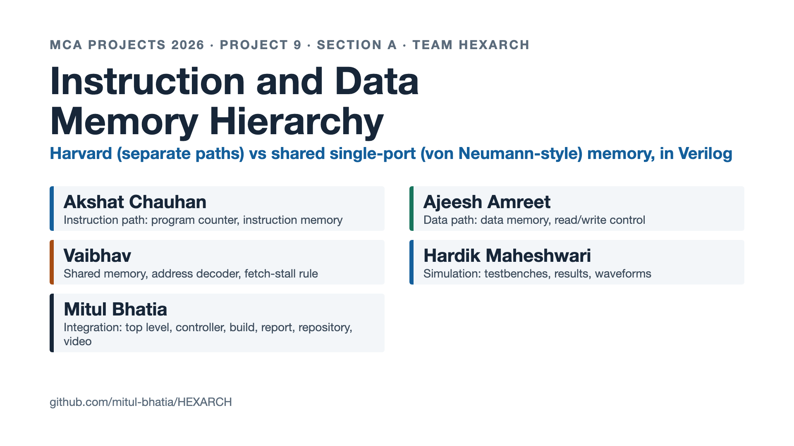
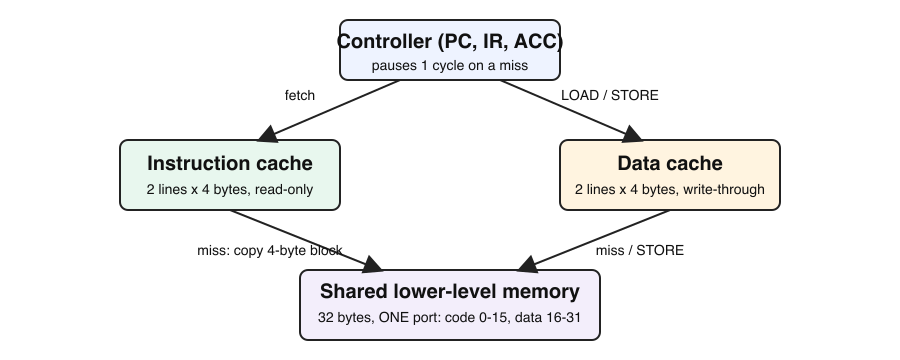

Instruction and Data Memory Hierarchy, explained from zero. Now with Phase II: the cached hierarchy.
One sentence version: separate paths for instructions and data let a processor do two memory jobs in the same clock tick. A shared single-port memory has to do them one after another.
What is in this guide
The big idea in plain words
Words you need to know
The tiny processor and its three-instruction program
The two designs side by side
Cycle by cycle: why 4 versus 6
The files: what each one does
The one rule that creates the difference
Tests, results and how to run everything
Roles and what the evaluation needs
Questions you may be asked
The video: how to record it, scene by scene (Phase I, done)
Phase II: what is graded and what we must do
Phase II: the memory hierarchy, explained from zero
Phase II: the files, the tests and the results
Phase II: status, what is left, and honest risks
Phase II: interview preparation
Interview day: 24 Nov, the 15-minute plan, who says what
Question bank A: Verilog and digital design
Question bank B: computer architecture, caches, our design
Question bank C: testing, tools, GitHub, report, AI, "change the code live"
One-page cheat sheet
Team: Akshat Chauhan, Ajeesh Amreet, Vaibhav, Hardik Maheshwari, Mitul Bhatia. Phase I (submitted) deadline was 16 November 2026. Phase II = final report, GitHub history and interview (70%). Every number in this guide comes from a real simulation run (Icarus Verilog 13.0).
1. The big idea in plain words
A processor keeps asking memory two different questions:
"What should I do next?" The answer is an instruction.
"What value am I working on?" The answer is data.
Think of a kitchen
A cook needs a recipe (instructions) and ingredients (data).
Harvard: two counters
One counter hands out recipe steps. A different counter hands out ingredients. The cook can read the next recipe step while grabbing an ingredient. Nobody waits.
Von Neumann-style shared: one counter
One window serves both. If the cook is collecting an ingredient, the next recipe step has to wait until the window is free.
What this project does
The brief calls this von Neumann vs Harvard. We built both memory designs in Verilog (a language for describing digital hardware), gave them the same tiny processor, same program, same data, same total memory, simulated them, and counted the clock cycles each needs.
The result
Same answer in both (the value 7 gets copied to a new place). Harvard finishes in 4 cycles. Shared memory needs 6 cycles, because two instruction fetches had to wait for the single port.
An honest limit, say this out loud if asked
This proves a point about port contention in a tiny model. It does not prove "Harvard is always faster". A program with no data accesses takes 4 cycles in both designs (we tested it).
Where it sits in the real world
Many small microcontrollers (PIC, AVR) use separate instruction and data memories. Big CPUs usually present one shared memory but use separate instruction and data caches. That is why it is called a "memory hierarchy" project. The optional lower-level shared memory from the brief is deliberately left out, which the brief allows.
2. Words you need to know
Word
Meaning in this project
Instruction
A one-byte command such as LOAD, STORE, HALT.
Data
The value being worked on. Here: the number 7.
Memory
A table of bytes you read by address. Instruction memory: 16 bytes. Data memory: 16 bytes.
Port
One "door" into a memory: one address in, one value out per cycle. A single-port memory can serve only one access per cycle.
Clock / cycle
The heartbeat. Things change on the rising edge. In simulation one cycle is 10 ns (a test setting, not a measured hardware speed).
PC (program counter)
4-bit counter holding the address of the next instruction to fetch.
Fetch
Reading the next instruction from memory.
IR (instruction register)
Holds the instruction that is running now while the PC already points at the next one.
ACC (accumulator)
One 8-bit register that temporarily holds a value. LOAD fills it. STORE copies it into memory and ACC keeps its value.
Valid bit
execute_valid: "the IR holds a fresh instruction". Stops an old instruction from running twice when a fetch was blocked.
Harvard
Separate instruction and data memories with independent ports.
Von Neumann-style / shared single-port
One memory, one port, instructions and data take turns. Named after von Neumann's 1945 stored-program design.
Address decoder
In shared mode: picks the physical address. Instructions to 0-15, data to 16-31.
Stall / bubble
A cycle where the fetch is blocked, so nothing new enters the processor.
HALT
Instruction that stops the processor; it then makes no memory requests.
Testbench
Verilog code that runs the design and checks the answers automatically (tb/tb_memory_compare.v).
VCD / waveform
A recording of every signal over time that a viewer can plot.
3. The tiny processor and its program
Every instruction is one byte: two halves (nibbles)
LOAD 0 ; ACC = data[0] (data[0] starts as 7)
STORE 1 ; data[1] = ACC (now data[1] is 7 too)
HALT ; stop
It simply copies the number 7 from data address 0 to data address 1. Both designs must end with data[1] = 7 and ACC = 7.
The processor's three parts
"Fetch" really goes through memory: the PC supplies an address, the instruction memory returns the byte, and the byte is stored in the IR.
Having one instruction register is what lets the processor execute the current instruction while fetching the next. That overlap is the only pipelining in the design, and it is exactly what the Harvard memory makes possible.
4. The two designs side by side
Harvard
Shared single-port
Memory
16-byte instruction + 16-byte data
One 32-byte memory
Ports
Two independent
One, taken in turns
Addresses
Each memory starts at 0
0-15 instructions, 16-31 data (address decoder)
Fetch during LOAD/STORE?
Yes, same cycle
No: data wins, fetch is blocked, PC holds
Same for both
Controller, program, starting data, total capacity (32 bytes), clock period
In the code, one parameter chooses the design: SHARED_BUS = 0 is Harvard, SHARED_BUS = 1 is shared (in rtl/memory_system.v). The same controller runs on both, so the only thing that differs is how the memory is wired.
5. Cycle by cycle: why 4 versus 6
Read each row left to right. Light box = fetching that instruction. Dark box = executing it.
Harvard: 4 cycles
1
2
3
4
5
6
Fetching
LOAD 0
STORE 1
HALT
none
stopped
stopped
Executing
empty
LOAD 0 reads 7
STORE 1 writes 7
HALT
stopped
stopped
Shared: 6 cycles
1
2
3
4
5
6
Fetching
LOAD 0
BLOCKED
STORE 1
BLOCKED
HALT
none
Executing
empty
LOAD 0 reads 7
empty
STORE 1 writes 7
empty
HALT
Cycle 2 is the key moment. Harvard's fetch and data read signals are both 1 at once. In shared memory the fetch signal is 0, because the only port is busy reading data. The same thing happens in cycle 4 when STORE writes. Two blocked fetches = two extra cycles = 6 instead of 4.
Same story as lines going up and down. Blue (Harvard): fetch stays high while read and write pulse. Orange (shared): fetch drops every time read or write is high.
Why "empty" in cycles 3 and 5 (shared)? A blocked fetch leaves no fresh instruction. The instruction register still holds the previous one (LOAD in cycle 3, STORE in cycle 5), but its valid bit is 0, so it is not executed again.
The general rule. For a straight-line program of N instructions (including HALT) with M LOAD/STORE instructions: Harvard takes N + 1 cycles, shared takes N + 1 + M. The demo has N = 3, M = 2, so 4 and 6. Every test and 2000 random programs follow it.
6. The files: what each one does
File (rtl/)
Job
Used in
program_counter.v
Counts up the instruction address, but only when a fetch is accepted.
Both
instruction_memory.v
16 bytes, loaded from programs/demo.hex. Read-only.
Harvard
data_memory.v
16 bytes, loaded from programs/data.hex. Read; write on the clock edge. Reset does not erase it.
Harvard
read_write_control.v
Decodes the instruction's top nibble into LOAD / STORE / HALT / illegal.
Both
simple_controller.v
The brain: holds IR, ACC, valid, halted, fault; decides when to fetch and when to read/write.
Both
address_decoder.v
One-line mux: data access gives address 16-31, otherwise 0-15.
Shared
shared_memory.v
32 bytes behind a single port; same read/write behaviour.
Shared
memory_system.v
Plugs the same controller into either memory arrangement.
Both
Other things in the repository
tb/tb_memory_compare.v
Runs both designs side by side, counts cycles, and fails loudly if anything is wrong.
tb/tb_random_stress.v
2000 random programs checked against a software model and the N + 1 / N + 1 + M rule.
programs/*.hex
The program (10 21 F0 ...) and the starting data (07 00 00 ...).
The top bit of the 5-bit address says "instruction side" (0) or "data side" (1). That is the whole mapping.
Known limits of the model (good to know before an interview)
Programs must fit in 16 bytes and finish with HALT. The 4-bit PC wraps around otherwise.
No jumps or branches, no arithmetic. Only LOAD, STORE, HALT, NOP.
Memory reads are combinational and writes happen on the rising edge: this is a simplified model, not a specific chip.
The 10 ns clock is a simulation setting. FPGA resources and real frequency were not measured.
8. Tests, results and how to run everything
Run it yourself (needs Icarus Verilog, Make, Python 3)
git clone https://github.com/mitul-bhatia/HEXARCH.git
cd HEXARCH
make demo # the 6-cycle table, prints DEMO PASSED
make test # every scenario, prints ALL TESTS PASSED
make stress # 2000 random programs, prints STRESS PASSED
Install on macOS: brew install icarus-verilog. Ubuntu/Debian: sudo apt-get install iverilog make python3. Windows: install WSL (wsl --install -d Ubuntu), then use the Ubuntu command inside Ubuntu.
The six scenarios and the results we measured
#
Scenario
Why it exists
Harvard
Shared
1
demo: LOAD 0, STORE 1, HALT
The main comparison
4
6
2
address boundaries
Uses data addresses 0 and 15; a STORE right before a LOAD of the same address
Cycle count starts at the first clock edge after reset is released and includes the HALT cycle.
What the testbench checks automatically
Every data word ends with the expected value, in both designs.
Instructions are never changed.
Each LOAD / STORE happens exactly once (no repeats).
PC advances only on a fetch, and holds during a blocked fetch.
In shared mode, fetch and data access never happen in the same cycle.
After HALT nothing touches memory; ACC is held.
Where the evidence lives
results/demo_output.txt
The readable cycle table from make demo (F/R/W = fetch / read / write).
results/test_output.txt, summary.csv
All scenario results.
results/stress_output.txt
Random-program result.
results/demo.vcd
Waveform. Open in a viewer such as GTKWave. Look under tb_memory_compare.h (Harvard) and .s (shared).
output/pdf/HEXARCH_Phase_I_Report.pdf
IEEE-format Phase I report.
9. Roles and what the evaluation needs
Who owns what
The same split is used in the report (Table II), the video and the starter tasks. Each member's own steps, with copy buttons, are in the Team hub: mitul-bhatia.github.io/HEXARCH/team.html (click your name).
address_decoder.v, read_write_control.v (enables gated in simple_controller.v)
Analyze simultaneous access opportunities
Cycle table, overlap and stall counts, the N + 1 / N + 1 + M rule
RTL, block diagram, waveforms, comparison
rtl/, docs/figures/, results/*.vcd, report Table I
Optional shared lower-level memory
Built in Phase II: split caches over one shared single-port memory (rtl/hierarchy_system.v, sections 13-14)
Deadline: 16 November 2026, 11:59 PM IST. The plan and checklist are in docs/TEAM_AND_PLAN.md.
10. Questions you may be asked
Question
Short answer
What is a Harvard architecture?
Separate memories and buses for instructions and data, so both can be accessed in the same cycle.
What is the shared alternative called?
Von Neumann style: one memory for both. With a single port, only one access per cycle.
Why 4 cycles versus 6?
Two of the program's instructions (LOAD, STORE) use data memory. In shared mode each blocks the next fetch for one cycle: 4 + 2 = 6.
Is Harvard always faster?
No. With no data accesses both take 4 cycles (our no-data test). It helps when fetch and data access would compete.
Why is there a valid bit?
When a fetch is blocked the IR still holds the old instruction. The valid bit says "nothing new", so it does not run twice.
Why only one instruction register?
That is enough to overlap "execute current" with "fetch next", which is all the demo needs.
What does reset do?
Clears PC, ACC, IR, valid, halted, fault and stops memory requests. Memory contents are kept (tested).
What happens with an unknown opcode?
The controller halts and sets the fault flag (tested).
What if a program has no HALT?
The 4-bit PC wraps after 16 instructions and the program repeats. The unused image bytes are filled with HALT (F0) to avoid this in our programs.
How do you know both designs are fair?
Same controller, same program and data, same 32-byte total, same clock period. Only the memory wiring differs.
How did you verify correctness?
An automatic testbench (six scenarios) and a 2000-program random test check every data word, access counts, PC behaviour, port ownership and halt behaviour.
What is not covered?
Branches, a full instruction set, synthesis or FPGA measurement, real clock speed. (The optional shared lower-level memory with caches was added in Phase II.)
Did you use AI?
The repository states starter code and drafts were prepared with AI assistance. Be ready to explain your own part and your own commits honestly.
Is there a general formula?
Yes. Harvard = N + 1 cycles, shared = N + 1 + M, for N instructions with M LOAD/STORE. Checked on every test and 2000 random programs.
Why "hierarchy" if there is one level?
The project title is the course's. We implement the instruction/data split that sits at the top of real hierarchies (split L1 caches). Phase II adds the lower level: two tiny caches over one shared memory, so it is now a real two-level hierarchy.
What does F/R/W mean in the output?
Instruction fetch / data read / data write.
If they ask you to open a file and explain
Waveform: open results/demo.vcd. Show clk, pc, instruction_register, execute_valid, fetch_enable, data_read_enable, data_write_enable, accumulator, halted for both h and s.
Code: go straight to the fetch_enable line in simple_controller.v, then address_decoder.v.
11. (Phase I, submitted) The video: how to record it, scene by scene
Clickable version with a prompter:mitul-bhatia.github.io/HEXARCH/team.html#video. Click a scene to see what to show, what to say and when to switch.
Must have: at most 5:00 · the project idea · all five full names · the working prototype. This plan: 7 scenes, about 3:40 of speech, about 4:40 with screen actions.
How it works
One laptop, one driver. Mitul's laptop shows everything. Mitul types the commands and switches windows when the speaker says the [cue word]. Speakers do not read the bracketed cue words aloud and never touch the keyboard.
Record: in the same room, press Cmd+Shift+5 on the Mac, choose Record Entire Screen and Options → Microphone. Online: a Zoom or Meet call where Mitul shares his screen and records; everyone uses their full name as display name.
Before recording: Do Not Disturb on, fonts 18 pt or larger, run make demo and make test once, then clear. Open the 13 windows in the order listed in docs/VIDEO_SCRIPT.md, starting with docs/video/title_card.png.
Shot list
#
Time
Speaker
On screen
1
0:00-0:25
Mitul, then everyone
Title card with all five names
2
0:25-1:10
Akshat
Block diagram (Harvard half) → program_counter.v
3
1:10-1:55
Ajeesh
README program → demo.hex → data_memory.v
4
1:55-2:35
Vaibhav
Block diagram (shared half) → address_decoder.v → simple_controller.v line 28
5
2:35-3:40
Hardik
Terminal make demo → waveforms.png
6
3:40-3:58
Hardik
Terminal make test
7
3:58-4:35
Mitul
no_data_access line → report → GitHub page → end card

Scene 1 title card (docs/video/title_card.png)
11. The video: exact words
Scene 1 | 0:00-0:25 | Mitul, then everyone
On screen: title card.
Mitul: "We are Team HEXARCH from Section A. Our project is Project 9, Instruction and Data Memory Hierarchy." Akshat: "I'm Akshat Chauhan." Ajeesh: "I'm Ajeesh Amreet." Vaibhav: "I'm Vaibhav." Hardik: "I'm Hardik Maheshwari." Mitul: "And I'm Mitul Bhatia."
Scene 2 | 0:25-1:10 | Akshat
On screen: architecture.png, Harvard half.
"Our idea is simple. Instructions say what to do; data is the value being worked on. In a Harvard design they have separate memories and separate ports, so the controller can fetch the next instruction while the current one reads or writes data. In a von Neumann-style design, both live in one memory with one port, so they take turns. [program counter] This is our program counter. On each clock edge it adds one, but only when a fetch is accepted; otherwise it holds."
Driver: at program counter, open rtl/program_counter.v, point at lines 7-9.
Scene 3 | 1:10-1:55 | Ajeesh
On screen: README, the three-line program.
"Our program has three instructions: LOAD 0, STORE 1, HALT. [In memory] In memory they are the bytes 10, 21 and F0. The first hex digit is the operation; the second is the data address. Data address 0 starts at 7. [data memory] This is our data memory, sixteen bytes. A read is ready within the same cycle; a write happens on the rising clock edge. LOAD copies 7 into the accumulator, STORE writes it to address 1, and HALT stops."
Driver: at In memory, open programs/demo.hex; at data memory, open rtl/data_memory.v, lines 13-15.
Scene 4 | 1:55-2:35 | Vaibhav
On screen: architecture.png, shared half.
"Both designs hold thirty-two bytes in total. In the shared design, one memory has one port. [address decoder] Our address decoder puts instructions at addresses 0 to 15 and data at 16 to 31. [This line] This line in the controller is the key rule: in shared mode, fetch is switched off during a LOAD or STORE. So the program counter holds, and the next instruction is fetched one cycle later."
Driver: at address decoder, open rtl/address_decoder.v (lines 8-9); at This line, open rtl/simple_controller.v and highlight line 28.
11. The video: exact words (continued)
Scene 5 | 2:35-3:40 | Hardik
On screen: terminal. Driver types make demo and presses Enter.
"I'll run make demo. Each row is one clock cycle. F, R and W mean instruction fetch, data read and data write. In cycle 2, Harvard fetches STORE while LOAD reads data, so fetch and read are both 1. Shared fetch is 0, because its one port is busy. In cycle 3, Harvard fetches HALT while STORE writes the 7. Harvard executes HALT in cycle 4, so it finishes in four cycles. Shared needs six; the two extra cycles are the two blocked fetches. Both end with 7 at data address 1. [waveform] The waveform shows the same: Harvard fetch overlaps the read and the write; shared fetch never does."
Driver: point at rows 2, 3, 4 and 6 as they are mentioned; at waveform, open docs/figures/waveforms.png.
Scene 6 | 3:40-3:58 | Hardik
On screen: terminal. Driver types clear; make test and presses Enter.
"Our testbench checks all of this automatically. make test runs every scenario, including boundary addresses, an invalid opcode and a mid-program reset. All of them pass."
Scene 7 | 3:58-4:35 | Mitul
On screen: the make test output; driver points at the no_data_access line (Harvard=4, shared=4).
"With no data accesses, both designs take four cycles. So separate paths help only when a fetch and a data access would compete; in our model the shared design needs exactly one extra cycle per LOAD or STORE. This is a small simulation model, not a general speed-up claim. [report] Our IEEE-format report [repository] and our repository have the Verilog, the testbenches, block diagrams, waveforms and results." Then one of these, whichever is true: "Each of us also added our own test or improvement, which you can see in our commit history. Thank you." or "Next, each of us is adding our own improvement from our own GitHub account. Thank you."
Driver: at report, open the report PDF; at repository, open the GitHub page and scroll once; after "Thank you", show the end card for two seconds and stop.
If something goes wrong
make demo fails: type cat results/demo_output.txt and say "This is the saved output of the same command."
make test fails: type clear; cat results/test_output.txt and say the same sentence.
A stumble: keep going. Restart only if two things go wrong or a name is missed.
Past 4:40 during scene 7: skip straight to "Thank you".
After recording
☐ Watch it once: all five names heard, code readable, at most 5:00.
☐ Upload: YouTube Unlisted, or Google Drive with Anyone with the link → Viewer.
☐ Open the link in a logged-out private window; it must play.
☐ Put the link and duration in VIDEO.md, commit, push, then submit the form.
12. Phase II: what is graded and what we must do
Phase I (30%) is submitted. Phase II is 70% of the project grade. The official message lists exactly three things:
Phase II item
What the instructors wrote
Where we are
1. Final IEEE report
Abstract, Literature Review, Proposed Solution, Results and Discussion, Individual Contributions, Conclusion, References.
Written.output/pdf/HEXARCH_Final_Report.pdf (source docs/report/phase2_report.tex, rebuild with make report2). All seven sections present.
2. GitHub repository
Keep maintaining it through Phase II. Version history and individual contributions count. All members contribute consistently; history shows development over time.
Needs the team. Mitul's commits are there. Each other member must make their own Phase II commits (section 15).
3. Project interview
Assesses understanding, implementation, individual contributions and overall work. All five must be involved and able to explain their part and the whole. Slots "will be shared soon".
Prepare. Sections 13 and 16 of this guide. Nobody has been told the slot yet.
Not in Phase II: a new video. The Phase II message does not ask for one. If the instructors ask for a demo in the interview, run make demo, make test and make hierarchy live.
What "done" means for us
The hierarchy RTL exists and every test passes (make check).
The final IEEE report exists and covers all seven required sections.
☐ Every member has merged at least one own pull request in Phase II (their commits, their account).
☐ Every member can explain the whole project without notes (sections 13 and 16).
☐ The final report is submitted the way the instructors say once they announce it (form or upload: not yet announced).
Important: the instructors have not yet said how the Phase II report is submitted or when. Watch the course group and email. Our repository link is the same one used in Phase I.
13. The memory hierarchy, explained from zero
Why add it?
The project title is Memory Hierarchy, and the brief lists an optional shared lower-level memory. A hierarchy means several levels: small, fast memory close to the processor, backed by a bigger shared one below. In Phase I we compared Harvard with a shared memory. In Phase II we combine them: the Harvard split stays on top (two small caches), and one shared memory sits underneath.

A cache in one picture
Think of a desk (cache) and a library shelf (shared memory). Reading a book from the desk is instant (hit). If it is not on the desk you walk to the shelf and bring a whole stack of four books back (miss): that costs one extra step. Next time any of those four is on the desk.
Part
How it works in our design
Size
Each cache: 2 lines x 4 bytes. One for instructions, one for data.
Address split (4-bit address)
bit 3 = tag (which of two blocks), bit 2 = line (which of the two lines), bits 1:0 = byte inside the line. This is called direct-mapped: an address can live in only one line.
Hit
Line is valid and the tag matches: data returned at once, no delay (same as Phase I Harvard).
Miss
The controller pauses for 1 cycle (the hold signal) while the 4-byte block is copied from the lower memory into the line.
One port rule
The lower memory can serve only one thing per cycle. If both caches miss together, data goes first, instruction one cycle later.
STORE
Write-through: written to the lower memory immediately, and to the data cache only if that byte is already cached. A store never happens during a pause, so it never fights a miss for the port.
Why 4 instructions per miss?
Instructions are read in order, so after one miss the next three fetches hit (spatial locality). A 16-byte program has only 4 instruction misses.
The new formula.Cycles = N + 1 + I + D where N = instructions executed (with HALT), I = instruction-cache misses, D = data-LOAD misses. Every miss costs exactly one cycle. Compare: Harvard = N + 1, shared = N + 1 + M.
13b. Cycle by cycle: the demo on the hierarchy (6 cycles)
Program: LOAD 0, STORE 1, HALT. This is real simulator output of hierarchy_system.
Cycle
What happens
Why
1
PAUSE: fetch of LOAD at address 0 misses the instruction cache
Cache is empty. Block 0 (addresses 0-3, includes all three instructions) is copied in.
2
Fetch LOAD (hit)
Now in the cache.
3
PAUSE: LOAD executes, data address 0 misses the data cache. Everything freezes.
Data block 0 is copied in. The fetch of STORE waits, nothing is lost.
4
LOAD executes (hit, reads 7) and STORE is fetched (hit)
Fetch and data read together: the Harvard benefit.
5
STORE executes (writes 7 through to memory) and HALT is fetched (hit)
Write-through. HALT is in the same block, no miss.
6
HALT executes
Done.
N = 3, I = 1, D = 1, so 3 + 1 + 1 + 1 = 6 cycles. Harvard needs 4, shared needs 6. Same answer in memory (data[0] = 7, data[1] = 7).
The seven hand-picked programs and what each one teaches
Program
N
Harvard
Hierarchy
I miss
D miss
Lesson
demo: LOAD 0, STORE 1
3
4
6
1
1
The walk-through above
Four LOADs, same block
6
7
10
2
1
One miss serves four reads (the benefit)
Two data blocks that fit
5
6
10
2
2
Two lines hold two blocks
Two blocks, same line
5
6
12
2
4
Thrashing: they evict each other, every LOAD misses (the weakness)
Full 16-byte program
16
17
21
4
0
16 / 4 = 4 instruction misses
Fetch and LOAD miss together
2
3
5
1
1
One port: data first, then instruction
STORE then LOAD
4
5
7
1
1
A store miss does not fill the cache; the LOAD then misses
Honest conclusion to say in the interview. In our model the hierarchy is never faster than the pure Phase I Harvard (that one has no miss cost). Its value is that it models what real machines do: the small split memories cannot hold everything, so they sit above one shared memory. Compared with the shared-only baseline it is faster whenever code and data are reused.
14. Phase II: the files, the tests and the results
File
What it does
rtl/l1_cache.v
The tiny cache (2 lines x 4 bytes, valid + tag + data). Used twice.
rtl/lower_memory.v
The shared 32-byte memory, one port. Returns a 4-byte block on a miss, writes one byte on a STORE.
rtl/hierarchy_system.v
Connects controller + two caches + lower memory. Creates hold = a miss is happening. Gives the data cache priority.
rtl/simple_controller.v
Gained one input: hold. When 1, the controller freezes. It is tied to 0 in the Phase I designs, so Phase I results did not change.
tb/tb_hierarchy.v
Self-checking test, run by make hierarchy.
results/hierarchy_output.txt
Saved test output (evidence).
docs/report/phase2_report.tex
The final IEEE report. PDF: output/pdf/HEXARCH_Final_Report.pdf.
docs/PHASE2.md
Short explanation and per-member tasks.
Run it
make hierarchy # Phase II test: prints HIERARCHY PASSED
make check # everything: demo + 11 scenarios + 2000 random + hierarchy
make report2 # rebuilds the final report PDF
What make hierarchy proves
7 directed and 3000 random programs run on the hierarchy and on the Phase I Harvard design: the final accumulator, every data byte and every instruction byte are the same, and match a software model.
Cycles = N + 1 + I + D in every program.
The expected hit/miss counts come from a separate software model of the cache, written independently of the RTL, so the test is not marking its own homework.
The lower-memory port is never written during a pause.
Automatic check on GitHub: every pull request runs make check and the site check. A green tick means all of it passed.
The final report: section by section
Required
Where in the report
Abstract
Top: three designs, the three formulas
Literature Review
Von Neumann, Harvard, split caches, microcontrollers, tools (with references)
Proposed Solution
Memories, controller, timing and the new subsection "Phase II: Cached Memory Hierarchy" with Fig. 2
Results and Discussion
Table I (Harvard vs shared), Table II-style hierarchy results, cycle model, limitations
Individual Contributions
Table with Phase I and Phase II responsibilities per member
Conclusion
All three designs compared, future work
References
Same list as Phase I
15. Status: what is done, what is left, what could go wrong
Done
Phase I: report, video, repository (submitted).
Phase II design: hierarchy RTL + tests, all passing; Phase I results unchanged.
Final IEEE report with all seven sections.
Study guide, requirement checklist and team tasks updated (this document).
Left to do (people, not code)
Who
What
Akshat
Own PR: add a directed test showing instruction misses = ceil(N/4) for N = 5 and N = 9. Read sections 13, 14, 16.
Ajeesh
Own PR: a test where a STORE hits a cached byte, then a LOAD of it reads the new value with no miss.
Vaibhav
Own PR: a check that the lower-memory port is never read and written in the same cycle. Important: no PR from Vaibhav appears in the history yet; this one matters most.
Hardik
Own PR: waveform dump of the hierarchy demo plus a screenshot in docs/figures/.
Mitul
Merge the PRs with merge commits, regenerate results/ once, rebuild the report and this guide, submit when the instructors announce how.
Everyone
Read sections 13 and 16. Practise explaining the 6-cycle table and your own files without notes. Exact steps for the PRs are in docs/PHASE2.md and the Team hub.
Problems and risks (be aware, none is fatal)
Risk
What to do
Uneven commit history. The graders review it; one author dominates.
Each member's own PR from their own fork and account. Nobody commits for anyone else. Do it as early as possible so the history shows time.
Interview: members cannot explain.
The guide is written for this. Everyone should know the 6-cycle table, the three formulas and their own files. If you did not write something, say so honestly and explain how it works.
AI assistance. The report and README disclose it.
Be honest. Be able to explain every line of your own part. "I understand it and tested it" is a good answer.
Phase II submission format unknown.
Instructors said details come soon. Watch for them; the PDF and repo are ready.
Phase I video link. It points to a Google Drive folder.
Check once in a private window that "anyone with the link" works and the video is inside.
Model limits. No branches, tiny caches, combinational reads, no synthesis numbers.
They are stated in the report's Limitations. Say them first in the interview; nobody can fault an honest limit.
The hierarchy is not faster than Harvard.
Expected: the model has no real miss penalty for Harvard. Explain that the hierarchy is about realism (small split memories over one shared memory) and beats the shared-only baseline when data and code are reused.
Old Phase I PR pages still show old commits (history was cleaned earlier).
Known, harmless. Do not worry about it.
16. Phase II interview preparation
The instructors will ask each of you about the project, the implementation, and your own contribution. Slots are not announced yet. Practise these.
Questions about the whole project
Question
Short answer
What does the project do?
Implements Harvard (separate instruction and data memories), a shared single-port memory, and a cached hierarchy in Verilog, runs the same programs on all of them, and compares cycles.
What is new in Phase II?
The optional shared lower-level memory: two tiny caches (instruction and data) over one shared memory. A miss pauses the controller for 1 cycle.
What is a cache hit and a miss?
Hit: the byte is already in the small memory, no delay. Miss: it is not; the block is copied from the lower memory, costing one cycle.
Why four bytes per line?
Instructions are read in order, so one miss brings the next three; cuts instruction misses to N/4.
What is direct-mapped?
Each address can be in only one line (chosen by address bit 2). Simple, but two addresses can evict each other (our "same line" test: 12 cycles).
Why is there one port on the lower memory and what does it cause?
It models a shared bus. Two misses together are served one at a time: data first.
What is write-through? Why?
Every STORE also updates the lower memory, so memory is always right. Simpler than write-back (no dirty bits).
How does the controller pause?
A hold input freezes PC, instruction register, accumulator and valid bit for a cycle. Phase I ties it to 0, so Phase I is unchanged.
What are the formulas?
Harvard N+1. Shared N+1+M. Hierarchy N+1+I+D.
How did you test?
Self-checking testbenches; 2000 and 3000 random programs compared with software models; an independent software cache model predicts every hit and miss.
What are the limits?
Tiny caches, no branches or loops, combinational reads, no synthesis or real timing, write-through only.
How could it be extended?
Synchronous-read memories, branches and loops (instruction reuse), bigger or associative caches, FPGA synthesis for area and clock.
Personal questions (each person)
Which files did you write or own, and what does each do? Open one and explain a few lines.
Which commit or pull request is yours? What did your test check?
Walk through the 6-cycle hierarchy table in your own words.
What would you change or add next?
Tip. Start answers with the simple idea, then the cycle count. If you do not know, say what you do know and how you would find out. Be honest about AI help: you reviewed, ran and can explain it.
Your five-minute checklist before the interview: run make check; open the Team hub; look at results/demo_output.txt and results/hierarchy_output.txt; reread sections 5, 13 and 13b.
17. Interview day: 24 November 2026, 3:25-3:40 PM, room A408
Facts from the official schedule. Team HEXARCH, Section A. Slot is 15 minutes, strictly on time, no rescheduling. All five members must be present in A408. Lab attendance is taken in the same room. Arrive by 3:10 PM.
Bring and prepare (do it the evening before)
☐ Laptop charged, repository cloned, iverilog works. Run make check once; it prints three PASSED lines and the hierarchy table.
☐ Open in tabs, before you walk in: the GitHub repo, results/demo_output.txt, results/hierarchy_output.txt, docs/figures/architecture.png, docs/figures/hierarchy.png, the final report PDF, and results/demo.vcd in a waveform viewer if you have one (optional).
☐ Phone hotspot as a backup if the room Wi-Fi fails. Everything above also works offline from the cloned repo.
☐ Each member re-reads sections 1-5, 13, 13b and the question banks (18-20) for their own area.
A plan for the 15 minutes
Minutes
Who
What to say or show
0-1
Mitul
Introduce all five by name. One sentence: "We compare Harvard, a shared single-port memory, and a cached hierarchy in Verilog, on one small controller."
1-3
Akshat
Block diagram, the program counter and instruction memory, the 8-bit instruction format (4-bit opcode + 4-bit address).
3-5
Ajeesh
Data memory and read/write control: LOAD, STORE, HALT decoding; the data path.
5-7
Vaibhav
Shared memory and address decoder (code 0-15, data 16-31); why a single port makes fetch wait.
7-10
Hardik
Run make demo (4 vs 6 cycles), then make hierarchy (the 6-cycle hierarchy table). Show the waveform.
10-12
Mitul
The Phase II idea: two tiny caches over one shared memory, hold, the formula N+1+I+D, the honest limits.
12-15
Everyone
Questions. Any member can be asked anything. Answer your own area; if it is someone else's, give the short answer and let them add.
The evaluators may skip your plan and start asking questions at once. That is fine: the question banks in sections 18-20 are written so that anyone can answer anywhere.
Rules for answering well
Simple idea first, number second. "Harvard has two separate memories so fetch and data access happen together; that is why 4 cycles instead of 6."
Say what you did yourself and open the file or commit. Do not claim others' work.
Honest about AI: "Starter code was drafted with AI assistance; I reviewed it, ran it and can explain it." Then explain it.
If you do not know: say what you do know, then how you would find out (read the file, run a test). Never guess a number.
Do not argue about limits. State them first: no branches, tiny caches, simulation only.
18. Question bank A: Verilog and digital design
Question
Answer (in our project's terms)
What is Verilog?
A hardware description language. We describe hardware (modules, wires, registers) and simulate it; it can also be synthesized to real hardware.
What is a module?
A block with input and output ports, e.g. program_counter. A bigger design instantiates modules inside other modules (memory_system contains the controller and memories).
wire vs reg?
wire is a connection driven by assign or a module output. reg holds a value assigned inside an always block (it becomes a flip-flop if clocked).
Combinational vs sequential logic?
Combinational: output depends only on current inputs (assign; our memory reads and the decoder). Sequential: has state updated on a clock edge (always @(posedge clk); PC, accumulator, instruction register, memory writes).
= vs <=?
Blocking = executes in order; non-blocking <= schedules all updates for the end of the time step, which is how real flip-flops behave. We use <= in clocked blocks.
What does always @(posedge clk) mean?
Run this block on every rising clock edge: a clocked register.
What is reset in our design?
A synchronous reset: checked on the clock edge. It clears PC, ACC, IR, valid, halted and fault. It does not erase memory (tested).
What is a parameter / generate?
parameter is a compile-time constant. SHARED_BUS selects Harvard (0) or shared (1); generate if builds one wiring or the other from the same file.
How is memory loaded?
$readmemh reads hex files (programs/demo.hex, data.hex) into the memory array at simulation start.
Why are memory reads combinational but writes clocked?
Reads: assign read_data = words[address] gives the value immediately (like distributed RAM). Writes happen on the rising edge so state changes once per cycle. FPGA block RAM is usually synchronous-read: a listed limitation.
What is a testbench?
A Verilog module with no ports that drives clock and reset, loads programs, runs the design and checks results automatically. Ours: tb/*.v.
What is a VCD file?
Value Change Dump: signal values over time. Open it in a waveform viewer (GTKWave) to see clk, pc, fetch, read, write.
What is a finite state machine? Do you have one?
A machine with states and transitions. Our controller is simple: it is effectively running / halted with a valid bit, rather than a big FSM. Be ready to say this plainly.
What is a latch and did you avoid it?
An unintended memory element from incomplete combinational code. We used assign and clocked blocks only, so none arise.
Synthesizable vs simulation-only code?
Our RTL is synthesizable in style. The testbench uses simulation-only things ($display, $readmemh at start, # delays) and was not synthesized. We did not run synthesis; we say so.
What is the clock in the simulation?
10 ns period (always #5 clk = ~clk). It is a simulation clock, not a measured hardware speed.
How does the instruction decode work?
High nibble = opcode: 0 NOP, 1 LOAD, 2 STORE, F HALT, anything else illegal (halts, sets fault). Low nibble = data address. read_write_control.v.
Why a 4-bit PC?
16-byte instruction memory = 16 addresses = 4 bits. It wraps from 15 to 0.
19. Question bank B: computer architecture, caches, our design
Question
Answer
Von Neumann vs Harvard?
Von Neumann: one memory and one path for code and data, so a fetch and a data access compete (the "von Neumann bottleneck"). Harvard: separate memories and paths, so both happen in the same cycle.
Where is Harvard used?
Microcontrollers (AVR, PIC), DSPs. Most PCs use a modified Harvard: one main memory, but separate L1 instruction and data caches. Our Phase II is exactly that shape.
What is a memory hierarchy and why?
Levels: small and fast near the CPU, large and slower below. It works because programs reuse data and nearby addresses (locality). Fast memory is expensive, big memory is slow; the hierarchy gives the speed of the small one at the size of the big one.
Temporal vs spatial locality?
Temporal: used again soon (repeated LOAD of the same address). Spatial: nearby addresses used soon (the next instruction). Our 4-byte line exploits spatial locality: 16 instructions cause only 4 misses.
Hit, miss, hit rate, miss penalty?
Hit: found in cache. Miss: not found, fetched from below. Hit rate = hits / accesses. Miss penalty = extra time: in our model exactly 1 cycle.
Direct-mapped vs set-associative vs fully associative?
Direct-mapped: each address has one possible line (ours: bit 2 selects). Associative: more than one possible line, fewer conflicts but more hardware. Ours conflicts: blocks 0 and 2 share line 0 and evict each other (12 cycles, "same line" test).
How is an address split?
Our 4-bit address = tag (bit 3) | index (bit 2) | offset (bits 1:0). Offset picks the byte in the 4-byte line, index picks the line, tag tells which block is there.
Write-through vs write-back?
Write-through: every store also goes to the lower memory (ours: simple, memory always correct). Write-back: write only the cache, write memory when evicting (needs dirty bits, faster, more complex).
Write-allocate vs no-allocate?
Ours is no-allocate on a store miss: the memory is written, the cache is not filled. If the byte is already cached, it is updated.
What is the AMAT formula?
Average memory access time = hit time + miss rate x miss penalty. Ours: hit time 0 extra, penalty 1 cycle, so extra cycles = number of misses.
What does hold do?
A controller input. While 1, PC, instruction register, accumulator and valid bit do not change and writes are suppressed, so the cache can finish copying the block. Tied to 0 in Phase I.
Why is data served before instruction on a double miss?
One port. The LOAD has already been fetched and is executing; the next fetch is younger. Data fill first, instruction fill next cycle. Costs 2 cycles total (test "fetch and LOAD miss together", 5 cycles).
Why does a store never conflict with a fill?
A store is gated by !hold: it only happens in a cycle where nothing misses, so the lower memory's single port is free.
Why is the hierarchy not faster than Harvard here?
In the Phase I Harvard model memories are always ready (zero miss cost), so the hierarchy can only match it. Against the shared single-port baseline it wins when there is reuse. The point is a realistic structure, not a speed record.
Is the cache coherent?
Yes in our design: stores write through and update the data cache if the byte is cached. The instruction cache is read-only and the program is never modified, so there is no stale code.
Why do you need a valid bit in a cache line?
At start the line holds garbage. Valid = 0 means "nothing here", so a tag match is never trusted.
What is a pipeline? Do you have one?
Overlapping stages. We have a two-stage overlap: fetch the next instruction while executing the current one (one instruction register). It is not a full CPU pipeline.
What is the cycle model?
Harvard N+1. Shared N+1+M. Hierarchy N+1+I+D. N = instructions including HALT, M = LOAD/STORE count, I = instruction misses, D = data LOAD misses.
Why N+1 and not N?
The first cycle only fetches (nothing to execute yet). After that one instruction executes per cycle while the next is fetched.
Real-world example of the bottleneck?
CPU waiting on slow DRAM; caches exist because of it. Also why GPUs and DSPs use separate or banked memories.
20. Question bank C: testing, tools, GitHub, report, AI, and live changes
Question
Answer
How do you know it is correct?
Self-checking tests: 11 directed scenarios, 2000 random programs (Harvard and shared), and 7 directed + 3000 random programs on the hierarchy. Each compares against a software model and checks cycle counts, memory contents, access counts, port ownership.
Why random tests?
They find cases we would not think of. A fixed seed makes them repeatable.
What is a golden / reference model?
A simple software calculation of the right answer. Ours computes the expected accumulator, memory and even the expected cache hits/misses separately from the RTL.
What is Icarus Verilog? Why not Vivado/ModelSim?
Free, open-source simulator (iverilog + vvp); runs anywhere including GitHub's CI. We did not need vendor tools since we did not synthesize.
What does make check do?
Runs demo, the 11 scenarios, the 2000-program stress and the hierarchy test; fails if any check fails. Results are copied to results/ only after a pass.
What is CI?
GitHub Actions runs make check on every pull request and push to main; a green tick means tests passed. Another workflow publishes the website.
Git workflow?
Each member forks, works on a branch, opens a pull request; another reviews, Mitul merges with a merge commit so each author's commits stay. No pushes straight to main.
What did you contribute?
Everyone: say your files, your PR number, and what the test checks. Akshat: #6 (16-byte program test). Ajeesh: #7 (copy chain) and #8 (data-path unit tests). Hardik: #9 (M = 1, 3, 5 sweep). Mitul: integration, controller, hierarchy, reports, repository. Vaibhav: his Phase II PR should be added (see section 15).
Where is the report?
output/pdf/HEXARCH_Final_Report.pdf, source in docs/report/.
Did you use AI? How much?
Yes, disclosed in the report and README: starter code, figures and drafts. The team reviewed, ran and tested it. Be ready to explain your own part line by line.
What are the project's limits?
No branches or loops, 8-bit toy instruction set, caches of 8 bytes, combinational reads, no synthesis, no timing/area numbers, simulation only.
What would you do next?
Add branches so loops reuse instructions; synchronous-read memories; larger/associative caches; write-back; synthesize on an FPGA for area and frequency.
"Change the code live" questions (practice these)
They say...
Do / say
Add a new opcode (e.g. ADD)?
Add a decode line in read_write_control.v (e.g. opcode 3), include it in the legal set so it is not illegal, and add the ALU action in the controller's execute step. Add a testbench case.
Make the cache bigger?
Increase lines in l1_cache.v (more index bits, fewer tag bits). Straight-line programs then miss the same; reused data conflicts less.
Make a miss cost 2 cycles?
Keep hold high for one more cycle with a small counter. Then the formula becomes N + 1 + 2(I + D). The test's expected value changes the same way.
Show that data is served before instruction.
Run the "fetch and LOAD miss together" scenario (program LOAD 10, HALT); 5 cycles; see fill_d and fill_i in hierarchy_system.v.
Run it for me.
make demo, make test, make hierarchy, make stress. Point at PASSED lines.
Show Harvard really overlaps.
In results/demo_output.txt cycle 2 shows Harvard F and R together, shared F is 0.
21. One-page cheat sheet (read this last, at 3:00 PM)
Mitul: top level, controller, hierarchy, report, repo.
Commands
make demo
make test
make stress
make hierarchy
make check # all
make report2 # final PDF
Before you leave home: charged laptop, repo cloned, make check run once, all five members know the room (A408) and the time (3:25 PM). Arrive 3:10 PM. Attendance for the lab is in the same room.